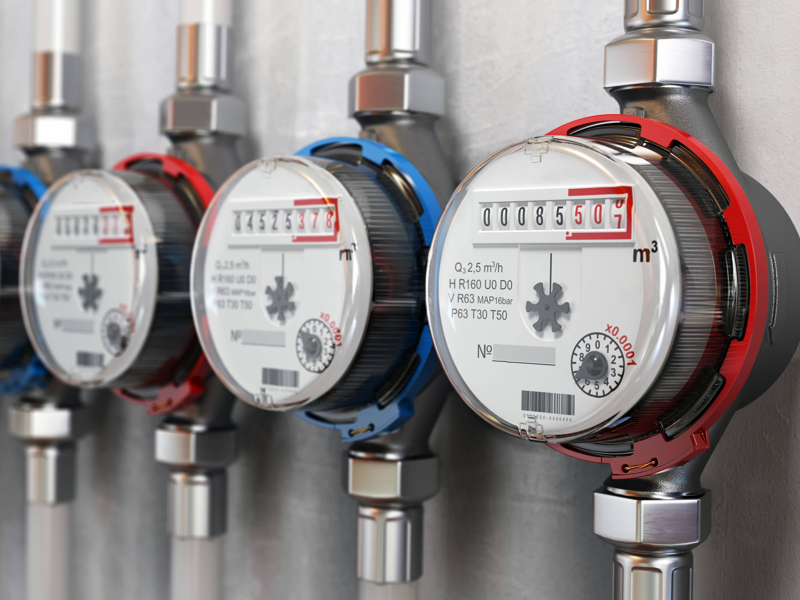

<section class="sc news sc--invert-bg sc--invert">
  <div class="grid-container">
    <div class="grid-x grid-margin-x">
      <div class="cell small-12">
        <header class="sc__header news__header">
          <h2 class="sc__heading news__heading">Інфо-центр</h2>
          <button class="button-magnetic-icon" type="button">
            <div class="button__content">
              <span class="button__text">До інфо-центру</span>
              <div class="button__icon">
                <svg
                  xmlns="http://www.w3.org/2000/svg"
                  width="7.759"
                  height="11.462"
                  viewBox="0 0 7.759 11.462"
                  stroke="#ffd701"
                >
                  <g
                    id="arrow_right"
                    data-name="arrow right"
                    transform="translate(-55.152 1165.551) rotate(-90)"
                  >
                    <line
                      id="Line_1"
                      data-name="Line 1"
                      x2="4.32"
                      y2="4.937"
                      transform="translate(1155.5 56.563)"
                      fill="none"
                      stroke-linecap="round"
                      stroke-width="2"
                    />
                    <line
                      id="Line_2"
                      data-name="Line 2"
                      x1="4.32"
                      y2="4.937"
                      transform="translate(1159.82 56.563)"
                      fill="none"
                      stroke-linecap="round"
                      stroke-width="2"
                    />
                  </g>
                </svg>
              </div>
            </div>
          </button>
        </header>
      </div>
      <div class="cell medium-6 large-4">
        <div class="news-item">
          <div class="news-item__info">
            <span class="news-item__tag">#новини</span>
            <span class="news-item__last-edit">39 хвилин тому</span>
          </div>
          <h3 class="news-item__heading">
            В Києві викрито підпільну криптоферму, яка встигла вкрасти об‘єм
            електричної енергії на 3.500.000 грн.
          </h3>
          <div class="news-item__content">
            <p>
              Організатори схеми орендували ангар і підключалися до
              електростанції в обхід лічильника. Правоохоронцями було вилучено
              спеціальне обладнання загальною вартістю понад 6.000.000 грн.
              Впевнені, що це не перша і не остання криптоферма в Україні, що
              точно можна сказати-винахідливі:)
            </p>
          </div>
        </div>
        <div class="news-item">
          <div class="news-item__info">
            <span class="news-item__tag">#новини</span>
            <span class="news-item__last-edit">1 година тому</span>
          </div>
          <h3 class="news-item__heading">
            За даними News in 24news.in-24.com постачальник газу в Німеччині
            gas.de припинив роботу 2 грудня 2021 року.
          </h3>
          <div class="news-item__content">
            
          </div>
        </div>
      </div>
      <div class="cell medium-6 large-8">
        <div class="tabs js-tabs">
          <div class="tabs__triggers js-tab-trigger">
            <div class="tabs__trigger-item">#Енергодоба</div>
            <div class="tabs__trigger-item">#газодоба</div>
          </div>
          <div class="tabs__content">
            <div class="tabs__item js-tab-item">
              <h3>14.12.2021 ОЕС</h3>
              <p>
                <b>Ціна базового навантаження без ПДВ:</b> 3171,18грн/МВт*год.<br>
                <b>Ціна пік без ПДВ:</b> 3998,42грн/МВт*год.<br>
                <b>Ціна поза пік без ПДВ:</b> 2343,94грн/МВт*год.<br>
                <b>Обсяг закупки:</b> 138 108,7МВт*год.<br>
                <b>Обсяг продажу:</b> 152 349,8МВт*год.<br>
                <b>Профіцитні години:</b> з 01-08, 16, 19-24;<br>
                <b>Дефіцитні години:</b> 09-15, 17-18.<br>
              </p>
              <br>
              <p>Тенденція ціни РДН підвищилася.</p>
              <h4>Пояснення:</h4>
              <ol>
                <li>Обсяг продажу на РДН в порівнянні з попередньою добою знизився на 17 464,3МВт*год; </li>
                <li>Обсяг закупки підвищився в порівнянні з попередньою добою на 2 157,6МВт*год; </li>
                <li>Ринок переважно профіцитний; </li>
                <li>Ціна висока за рахунок підвищення об‘єму закупки і зниження об‘єму продажу</li>
              </ol>
            </div>
            <div class="tabs__item js-tab-item">щось про газодобу</div>
          </div>
        </div>
      </div>
    </div>
  </div>
</section>
